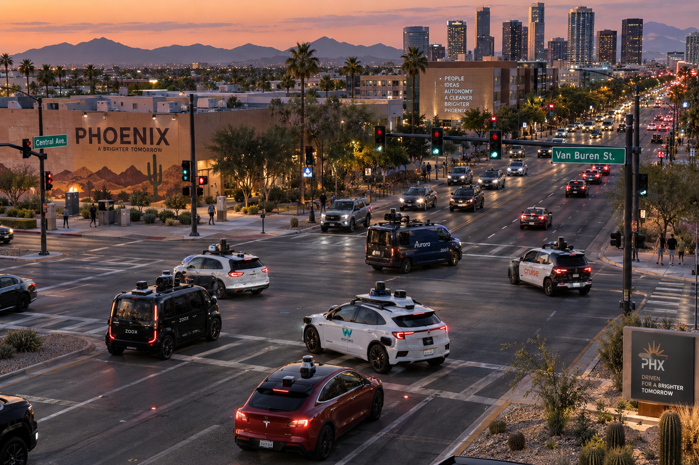

Phoenix Is Becoming America’s Most Important Test of Multi-Operator AV Governance.
The first decade of autonomous mobility asked whether an individual autonomous driving system could operate safely on public roads. Phoenix is beginning to pose a harder question: what happens to safety assurance when independently developed autonomous systems, operating under different architectures, operating domains, evidence systems, and regulatory relationships, begin sharing the same transportation environment?
Phoenix has been central to U.S. autonomous-vehicle deployment for a decade. Waymo began testing in the Valley in 2016 and later made the region the launch market for its fully driverless public ride-hailing service. Today the market is no longer defined by a single mature operator. It includes commercial deployment, testing, monitored or pre-deployment activity, and autonomous freight operations at different stages of maturity.
That distinction matters. These companies should not be treated as five equivalent operators. Their technology, operating status, scale, regulatory exposure, and evidence maturity differ materially. The more important development is that several autonomous systems are now operating, testing, or preparing to scale inside the same regional transportation ecosystem.
The road is shared. The assurance systems are not. Each operator develops its own safety arguments, operational controls, evidence, monitoring processes, and incident-response procedures. Phoenix is becoming a real-world test of what happens when those independently assured systems begin interacting at ecosystem scale.
One market, several stages of autonomy
Waymo remains the most mature autonomous passenger operator in Phoenix. Its 2026 freeway construction-zone recall also provides one of the clearest public examples of an AV operator moving through a large-scale incident lifecycle: detection, internal safety review, operational restriction, recall, software remediation, validation, phased reintroduction, and continued monitoring.
NHTSA’s recall filing describes Phoenix and California events in which vehicles entered or passed into active freeway construction areas after failing to respond appropriately to closures. Waymo subsequently updated the software and operational protocols. Freeway rides were gradually resumed in Phoenix first.
Carziqo announced on August 3 that it had launched ER-MX autonomous ride-hailing operations in Phoenix. Its public materials describe centralized fleet management, route planning, real-time monitoring, and gradual expansion based on operational data.
But the public evidence base is materially thinner than it is for established operators. Carziqo’s own newsroom has announced a rapid succession of deployments across multiple U.S. cities. Those company statements are relevant, but they should not be treated as equivalent to independently established operating scale, regulatory status, or safety performance. For an assurance-focused analysis, that distinction is important.
Zoox introduces a different kind of assurance problem because its purpose-built vehicle removes the conventional driver position entirely. Different vehicle architecture changes the evidence needed for design assurance, operational response, event reconstruction, and regulatory review. Its Phoenix presence therefore matters even before commercial scale is reached.
Tesla adds another assurance architecture to the emerging market. In September, NHTSA opened an Audit Query into Tesla’s self-certification of the Cybercab following its Austin deployment. The federal inquiry concerns the process and technical basis Tesla used to certify compliance with applicable Federal Motor Vehicle Safety Standards.
The significance for Phoenix is not that one perception architecture should be declared superior to another. It is that different companies can arrive at deployment with materially different technical architectures, safety arguments, evidence strategies, and regulatory questions.
Aurora extends the problem beyond passenger mobility. The company has been developing driverless freight routes connecting Phoenix with Texas and has stated a goal of more than 200 driverless trucks in operation by the end of 2026. Aurora reported more than 250,000 driverless miles as of January 2026 with zero Aurora Driver-attributed collisions.
Passenger robotaxis and autonomous trucks may share physical roads while sitting inside different operating, commercial, and regulatory structures. That creates an important interface for future incident governance.
The deeper problem: shared roads, separate safety cases
An autonomous operator does not simply deploy a vehicle. It deploys an assurance system around that vehicle. The organization has claims about what the system can do safely, arguments supporting those claims, evidence generated through testing and operations, an operational design domain, monitoring thresholds, incident procedures, and processes for deciding when operation should be restricted or expanded.
Those assurance systems are largely organization-specific. That is manageable when a safety-relevant event can be understood primarily through one operator’s evidence environment. It becomes more complicated when an event involves two autonomous systems.
“The road is shared. The assurance systems are not.”
ITquette Autonomous Lab · September 2026Consider a road event involving two autonomous vehicles from different companies. Each may hold perception records, trajectory predictions, planning decisions, localization data, remote-assistance records, software configuration information, and fleet telemetry relevant to reconstructing what occurred. Neither company’s evidence alone may tell the complete story.
The central governance question therefore is not simply who owns the incident? A stronger question is:
How can a regulator, investigator, insurer, or other authorized reviewer reconstruct a safety-relevant event when the evidence required to understand it is distributed across autonomous systems operated by different companies?
This is an evidence-interoperability problem. It does not require companies to expose proprietary source code or share their entire safety cases. But mature multi-operator markets may eventually require common expectations for event classification, evidence preservation, notification, data availability, reconstruction, and corrective-action traceability.
What we can say publicly, and what we cannot
Public information does not establish that Phoenix operators have no cross-company coordination mechanisms whatsoever. Private procedures, regulator-led processes, law-enforcement practices, insurer protocols, or bilateral arrangements may exist without being visible publicly.
The more defensible observation is narrower: ITquette has not identified a publicly documented, Phoenix-wide cross-operator incident-governance framework that explains how safety evidence would be coordinated when an event materially involves more than one autonomous operator.
That distinction matters. An organization focused on credible safety evidence should apply the same evidence discipline to its own analysis that it expects from the industry.
The Waymo recall shows what operational assurance looks like
Waymo’s 2026 construction-zone recall is useful because it exposes much of the lifecycle that is normally hidden behind the phrase “software update.” NHTSA’s recall documentation describes repeated events, internal safety committee review, operational restrictions, escalation to Waymo’s Safety Board, and a decision to conduct a recall. The remedy included software improvements and additional operational protocols.
The public sequence can be understood as an assurance loop:
- Operational event: vehicles encounter freeway construction closures incorrectly
- Pattern recognition: multiple events indicate the issue is not isolated
- Risk control: freeway operations are restricted
- Investigation: the failure mechanism is reviewed and escalated internally
- Corrective action: software and operational protocols are changed
- Validation: updated performance is evaluated through testing, simulation, and real-world driving
- Reintroduction: freeway operations resume gradually, beginning in Phoenix
- Monitoring: post-remedy performance remains part of the operational safety problem
But this sequence also exposes an important distinction. Demonstrating that a software change performs correctly is not automatically the same thing as demonstrating that operational risk has been reduced across the deployed system.
That is the Incident-to-Improvement problem: at what point does evidence that a corrective action worked become sufficient evidence that the underlying operational risk has actually been reduced?
The answer requires more than a successful test. It requires traceability from the original event to the identified failure mode, corrective action, validation evidence, deployed configuration, affected scenarios, residual risk, and continued operational monitoring.
Three assurance questions Phoenix now raises
Can evidence cross organizational boundaries?
If two autonomous systems are materially involved in one event, can the relevant evidence be preserved, aligned in time, interpreted, and made available to authorized investigators without destroying legitimate protections around proprietary technology?
Who defines the common event?
Two operators may classify the same encounter differently. A mature multi-operator environment may need shared minimum definitions for safety-relevant events, near misses, evidence retention, reporting thresholds, and corrective-action triggers.
How is system-level risk detected?
An operator can monitor its own fleet. A regulator or city faces a different question: can patterns that emerge only across operators be detected when the underlying operational evidence remains fragmented?
From vehicle assurance to ecosystem assurance
The AV industry has spent years developing methods for showing that an individual autonomous driving system can operate within an intended domain at an acceptable level of risk. That work remains essential. But scale introduces another layer.
A transportation ecosystem can contain individually engineered systems whose interactions create scenarios that were not central to any one operator’s original assurance argument. More operators, vehicle types, software releases, operating domains, fleet managers, mobility platforms, insurers, and regulators increase the number of organizational interfaces around the technology.
This does not mean Phoenix is unsafe. Nor does the presence of multiple operators prove that a governance failure exists. It means the object of assurance is beginning to expand.
AV safety assurance has largely been organized around the question, “Can this system operate safely?” Multi-operator markets add another: “Can independently assured systems produce coherent safety evidence when they interact?”
What to watch next
- Post-recall evidence: what becomes publicly visible about Waymo’s construction-zone corrective action and post-remedy operational performance?
- Cross-operator events: when a safety-relevant event materially involves more than one automated system, how is evidence preserved and responsibility coordinated?
- Deployment-status clarity: as new entrants announce operations, can regulators, researchers, and the public distinguish testing, supervised deployment, driverless operation, and commercial service?
- Passenger-freight interfaces: how will incident and evidence processes work when autonomous passenger vehicles and autonomous commercial trucks interact?
- Regulatory learning: does Arizona develop more explicit cross-operator reporting, evidence, or coordination expectations as the market becomes more heterogeneous?
Phoenix is testing more than autonomous driving
The first decade of autonomous mobility asked whether an individual autonomous driving system could operate safely on public roads.
The next phase introduces a different problem.
Multiple autonomous systems will increasingly share the same roads while operating under different ODDs, safety arguments, evidence systems, incident processes, fleet architectures, and regulatory relationships.
An event involving one autonomous vehicle can often be investigated largely within one operator’s evidence environment. An event involving two autonomous systems may require evidence held by two companies, generated under different architectures, classified under different internal processes, and potentially governed by different regulatory requirements.
Phoenix therefore raises a question larger than whether another robotaxi company can successfully enter the market:
“Can a transportation system composed of independently assured autonomous systems produce coherent safety evidence when those systems interact?”
ITquette Autonomous Lab · Research QuestionThe industry does not need every operator to share proprietary technology. But regulators and operators may eventually need common expectations for event classification, evidence preservation, cross-operator notification, reconstruction, and corrective-action traceability.
The road is already becoming shared. The assurance architecture may eventually have to follow.
Evidence base
This analysis distinguishes company announcements from independently established facts. Key public records used for the revised analysis include NHTSA’s 2026 Waymo recall filing and Cybercab Audit Query; public reporting on Waymo’s Phoenix freeway reintroduction; Aurora’s SEC-filed shareholder materials and Phoenix expansion reporting; and Carziqo’s own newsroom announcement of its Phoenix deployment. Where no public cross-operator framework was identified, the article states that limitation rather than treating absence of public evidence as proof that no private mechanism exists.
Follow the research. Reach out if it resonates.
ITquette Autonomous Lab examines operational safety assurance, safety evidence, incident learning, and the governance infrastructure emerging around autonomous systems.